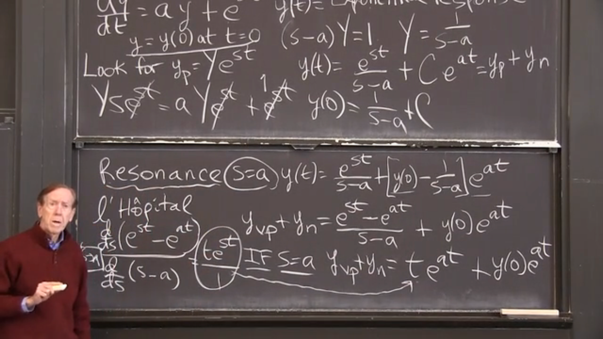

\begin{align*}
\fe{f}{x}&=\frac{x^{2} - 2 \, \sqrt{x}}{x}\\
\text{Expand this to:}\\
\fe{f}{x}&=x - \frac{2}{\sqrt{x}}\\
\text{Differentiate each part using the power law: } \de {x^r}x = r x^{r-1}\\
\fe{\fd{f}}{x}&=1+\dfrac{1}{\sqrt{x^3}}
\end{align*}
Exercises4.4Exercises
Exercise1
Response to Exponential Input
Consider the following differential equation:
\begin{equation}\frac{dy}{dt} = ay + e^{st}\label{men-26}\tag{4.4.5}\end{equation}\begin{equation}y=y(0)\:at\:t=0\label{men-27}\tag{4.4.6}\end{equation}
This is the standard growth equation with an exponential forcing term \(e^{st}\).
We look for a particular solutions of the form:
\begin{equation*}y_p = Ye^{st}\end{equation*}
where \(Y\) is a constant.
Substituting we get:
\begin{equation*}Ys e^{st} = aY e^{st} + e^{st}\end{equation*}
Rearranging gives:
\begin{equation*}Y=\frac{1}{s-a}\end{equation*}
Full solution is the particular solution plus null (or homogeneous) solution:
\begin{equation*}y(t)=\frac{e^{st}}{s-a} + C e^{st}\end{equation*}
That is, the solution is a combination of the standard homogeneous term - the standard growth factor - plus an extra term coming from the forcing factor.
Notice that this extra term has a singularity (division by zero) at \(s=a\). This is Resonance.
This singularity can be handled using L'Hopital's Rule4.0.3
Figure4.4.1Gilbert Strang In Action
The full solution, using L'Hopital, should match the final solution in
Strang's Lecture.
\begin{equation}y(t)=y_{0} e^{a t} + t e^{s t}\label{men-29}\tag{4.4.8}\end{equation}
This is not quite the same format as Strang but it is easy to see that it is equivalent.
As mentioned above this solution can be taken further by using L'Hopital's Rule.4.0.3
We can circumvent the \(0/0\) catastrophe by differentiating the numerator and denominator.
Sage Commands:
numerator = e^(s*t) - e^(a*t)
numerator.diff(s)
denominator= s - a
denominator.diff(s)
This results in \(\frac{f'(x)}{g'(x)}=\frac{t e^{s t}}{1}=t e^{s t}\)
Hence the full solution using L'Hopital now matches Strang's final solution:
\begin{equation*}y(t)=y_{0} e^{a t} + t e^{s t}\end{equation*}
Exercise2
Response to Oscillating Input
Consider the following differential equation:
\begin{equation}\frac{dy}{dt} = ay + \cos\left(\omega t\right)\label{men-30}\tag{4.4.9}\end{equation}\begin{equation}y=y(0)\:at\:t=0\label{men-31}\tag{4.4.10}\end{equation}
This is the standard growth equation with a sinuosoidal input term \(\cos\left(\omega t\right)\).